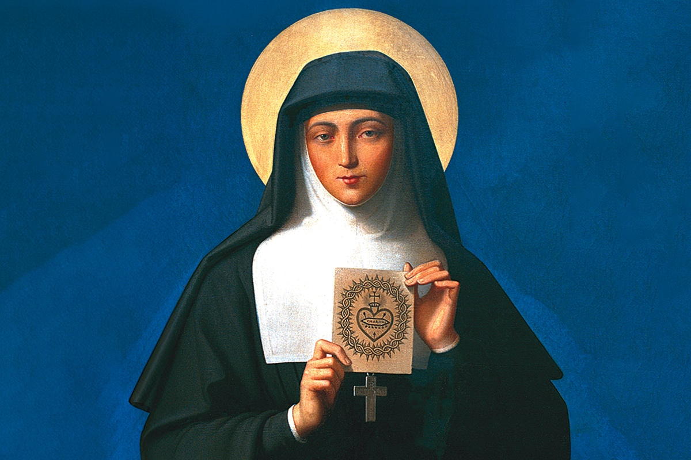
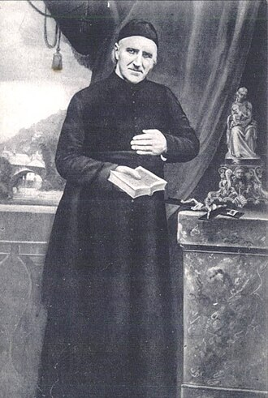

Pour la première édition de FEDEZ IBIL, nous préparons un pèlerinage en Basse-Navarre (autour de Saint-Jean-Pied-de-Port) sur le thème de la dévotion au Sacré-Cœur de Jésus. Il se déroulera de la manière suivante :
- le samedi, le point de rendez-vous sera fixé peu avant midi pour la messe. Nous parcourrons 13 ou 15 km sur les sentiers de Compostelle. À l’arrivée, après une veillée, nous passerons la nuit sous tente.
- le dimanche, nous reprendrons notre pèlerinage, parcourrons environ la même distance et terminerons avec la messe dominicale, en début ou milieu d’après-midi.
Lorsque les préparatifs auront suffisamment avancé, cette page sera mise à jour.

